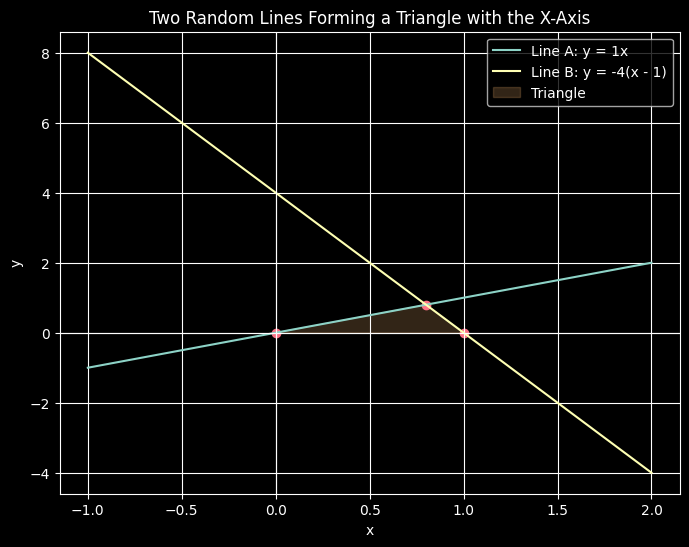

import numpy as np
import matplotlib.pyplot as plt
import random
plt.style.use('dark_background')
# --- Random slopes ---
m1 = random.randint(1, 5) # positive slope
m2 = random.randint(-5, -1) # negative slope
print(f"Line A (through 0,0) slope: {m1}")
print(f"Line B (through 1,0) slope: {m2}")
# --- Define the two lines ---
# Line A: y = m1 * x
# Line B: passes through (1,0)
# slope m2 => y - 0 = m2 (x - 1) => y = m2(x - 1)
def lineA(x): return m1 * x
def lineB(x): return m2 * (x - 1)
# --- Find intersections with the x-axis (y = 0) ---
# Line A hits at x = 0
xA = 0
# Line B hits at x = 1
xB = 1
# --- Find intersection between lines A and B ---
# Solve: m1*x = m2(x - 1)
# m1*x = m2*x - m2 => (m1 - m2)x = -m2
# x = -m2 / (m1 - m2)
xI = -m2 / (m1 - m2)
yI = lineA(xI)
# --- Plotting range: capture whole triangle ---
xmin = min(xA, xB, xI) - 1
xmax = max(xA, xB, xI) + 1
x = np.linspace(xmin, xmax, 400)
# --- Plot ---
plt.figure(figsize=(8,6))
plt.plot(x, lineA(x), label=f"Line A: y = {m1}x")
plt.plot(x, lineB(x), label=f"Line B: y = {m2}(x - 1)")
# --- Highlight triangle ---
plt.fill([xA, xB, xI], [0, 0, yI], alpha=0.2, color='#FDBA74', label="Triangle")
# Axes and formatting
plt.axhline(0, color='white', linewidth=0.8)
plt.axvline(0, color='white', linewidth=0.8)
plt.scatter([xA, xB, xI], [0, 0, yI], color='#FB7185')
plt.xlabel("x")
plt.ylabel("y")
plt.title("Two Random Lines Forming a Triangle with the X-Axis")
plt.legend()
plt.grid(True)
plt.show()Line A (through 0,0) slope: 1
Line B (through 1,0) slope: -4